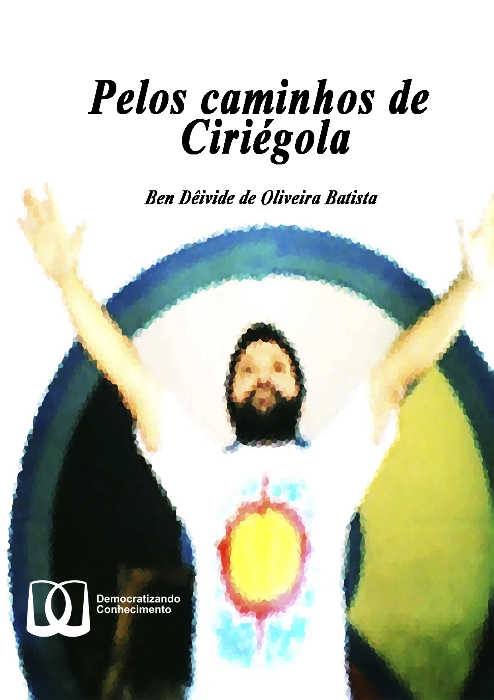

Bem-vindo
 Esse é um livro digital intitulado “Pelos caminhos de Ciriégola”, com o selo Democratizando Conhecimento (DC). O Livro é um convite para mergular nas poesias, textos e prosas de José Alcigério Batista, o Ciriégola.
Para quem deseja obter o livro físico, acessar a Amazon.com.
O número de leitores que acessaram esse livro:ISBN
Impressão (brochura) nos EUA, Impresso (capa dura) e publicado no Brasil:
- ISBN (Digital): 978-65-00-35612-0
- ISBN (Brochura): 978-65-00-35611-3
- ISBN (Capa dura): 978-65-00-45302-7
Licença

Este trabalho está sob a Licença Creative Commons - Atribuição-NãoComercial 4.0 Internacional.